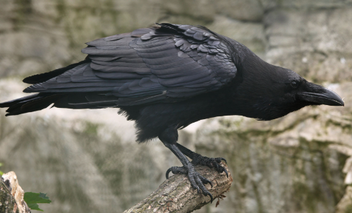
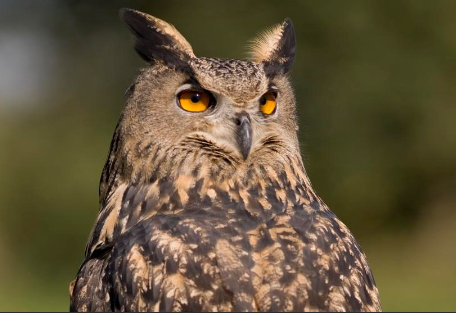
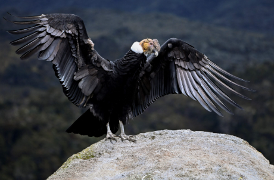
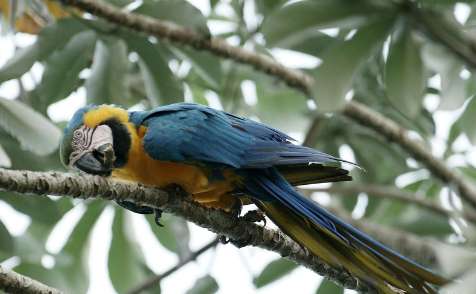

Difficile de controler exactement l'age des oiseaux en liberté. En général, ils vivent plus vieux en captivité
 69 ans pour le grand corbeau à gauche, champion de la longévité en liberté. Et 65 ans pour le grand duc à droite, qui vit dans les forets européennes.
 65 ans pour le condor des Andes à gauche, qui peut atteindre 100 ans en captivité. Et 64 ans pour l'ara bleu à droite, ce magnifique perroquet des forets tropiccales.